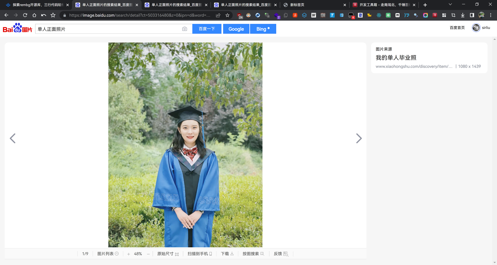
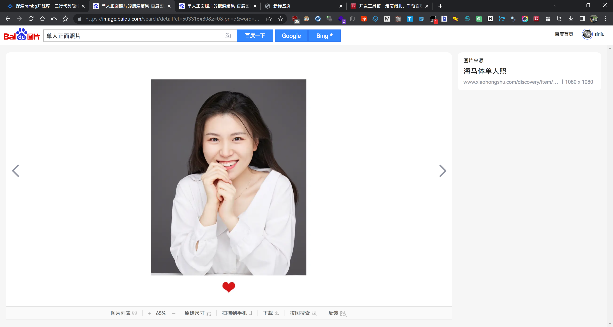
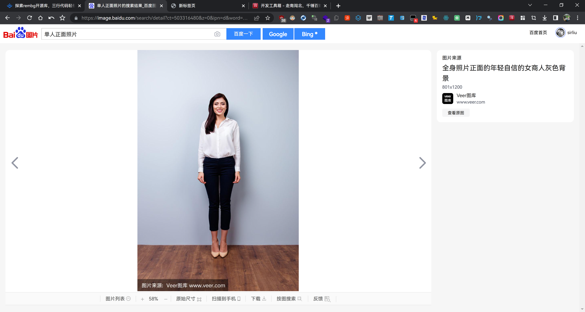

# 作用
将证件照杂乱背景改为指定纯色背景，同时修改照片尺寸。
所用到的库是 rembg <br>
详细代码如下：
from PIL import Image | |
import rembg | |
def process_image(input_path): | |
# 打开源图像 | |
input_img = Image.open(input_path) | |
# 移除背景 | |
output = rembg.remove(input_img) | |
# 以 4:3 的比例计算宽度. | |
new_width = int(output.height * 3 / 4) | |
# 计算起始 X 坐标的裁剪，以确保受试者保持居中。 | |
x_start = (output.width - new_width) // 2 | |
# 裁剪图像。 | |
cropped_output = output.crop((x_start, 0, x_start + new_width, output.height)) | |
# 创建一个带有裁剪尺寸的新图像，并用蓝色填充。 | |
blue_background = Image.new("RGB", cropped_output.size, "#438EDB") # #438EDB 为颜色代码 | |
# 将裁剪的图像粘贴到蓝色背景上。 | |
blue_background.paste(cropped_output, (0, 0), cropped_output) | |
# 保存结果图像。 | |
inputname = input_path.split(".")[0] | |
blue_background.save(f'out_{inputname}.jpg') | |
# 调用函数 | |
input_path = 'tsett.JPG' | |
process_image(input_path) |
# 处理效果
# 1

# 2

# 3

# rembg 更多用法
参考 https://juejin.cn/post/7250291603814694970
# 证件照尺寸
1. 一寸证件照的比例一般为 5:7，尺寸是 2.53.5cm，像素为 295413。
2. 二寸证件照的比例一般为 4:3，尺寸是 3.55.3cm，像素为 413626。
# 推荐在线服务
https://id-photo.cn/color/
唯一的顾虑是网站是否将你提交（通过抓包，该网站的抠图换色是在服务端完成的）的照片和你的客户端信息绑定，然后可以精准的溯源你提交照片的 IP 地址。